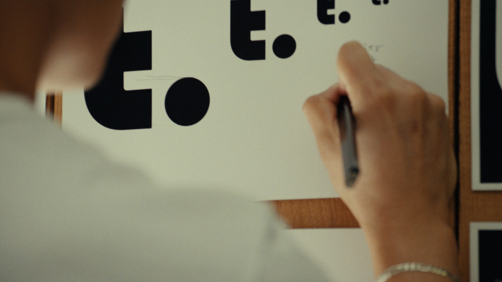
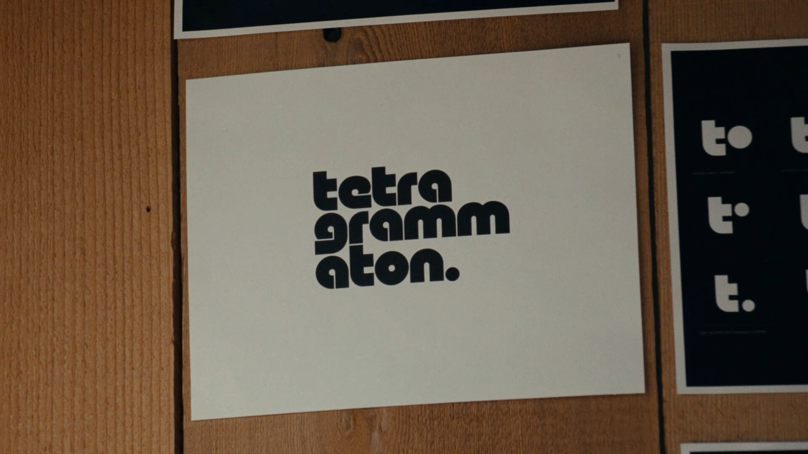
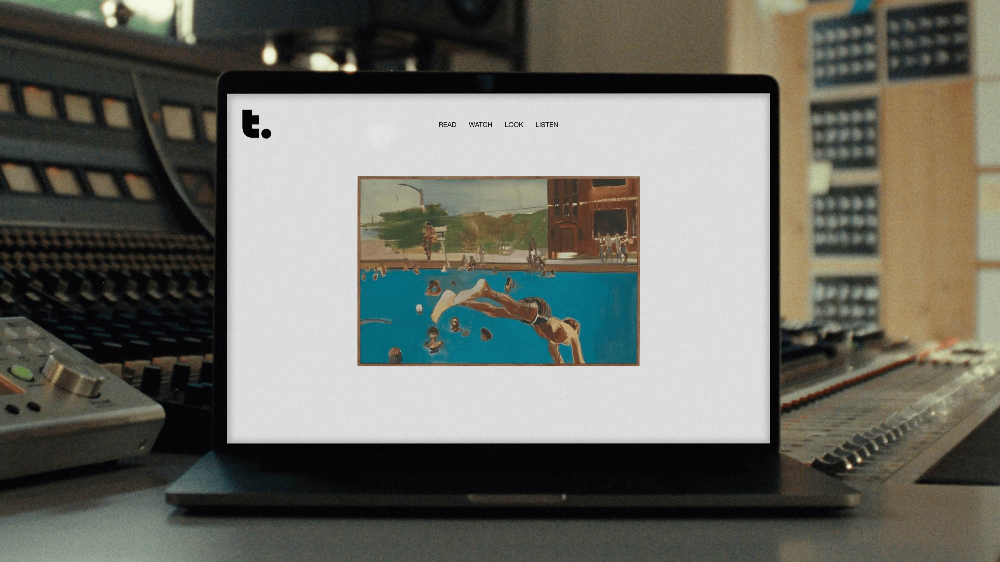

Tetragrammaton
Squarespace x Rick Rubin
Rick Rubin wanted a repository for his inspiration, and an archive to hold episodes of his podcast and footage from his studio. He wanted a biodynamic calendar, a course on meditation, and an on-air radio station. And he wanted a living platform that would grow with him, evolving to host his ever-growing roster of projects and interests. My team at Squarespace helped him build it. The result is Tetragrammaton, a recessive yet flexible space for Rubin to share his worldview.
Creative Direction: Satu Pelkonen
Design lead: Albert Chang
Design: Mikki Janower, Zoonzin Lee, and Jaycee Masucci
Motion design: Videl Torres
Photography: Craig Reynolds
Photo assistant: Spencer Blake
Photo retouching: Sarah Barr and Derek Kalisher


We began by expanding Rick's existing Tetragrammaton wordmark into a broader, more flexible system. The shorthand logomark, shown here in Rick's Los Angeles studio, would become the cornerstone of the site.
We brought the identity to life with motion, highlighting the wordmark's simple geometric forms.

The site is ever-changing, its landing page spotlighting a new artwork each day. Its design, however, is pared down to a scaffolding, creating quiet spaces where content can speak and visitors can listen.


Our campaign film, shot in Rubin's Los Angeles studio, walks through his creative process and his vision for the Tetragrammaton ecosystem.
We also adapted our design to create a limited-edition Squarespace template anyone can use. Learn more or try the template here.